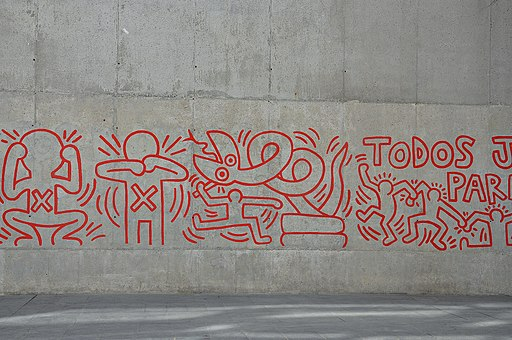
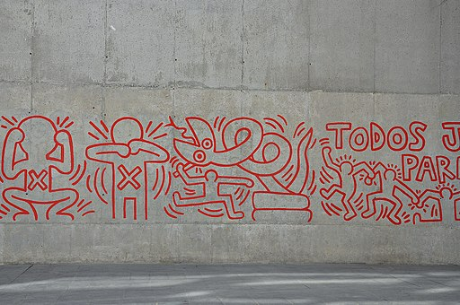
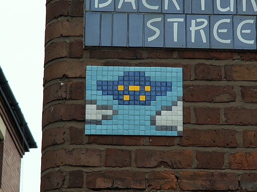
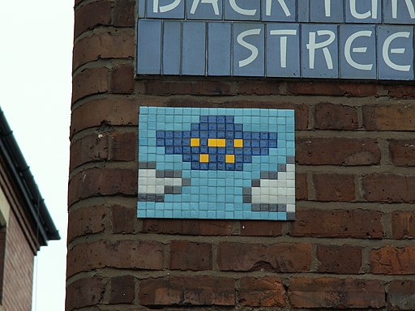

El término arte urbano o arte callejero, hace referencia a todo el arte de la calle. El arte urbano engloba tanto al grafiti como a otras diversas formas de expresión artística callejera. Desde mediados de los años 1990 el término street art o, de forma más específica, Post-Graffiti se utiliza para describir el trabajo de un conjunto heterogéneo de artistas que han desarrollado un modo de expresión artística en las calles mediante el uso de diversas técnicas (plantillas, pósteres, pegatinas, murales, grafitis...), que se alejan del famoso grafiti pero no siempre es en paredes pues ahora en la actualidad es posiblemente, incluso, dibujar en forma experta 3D
Arte
Urbano


 

 
